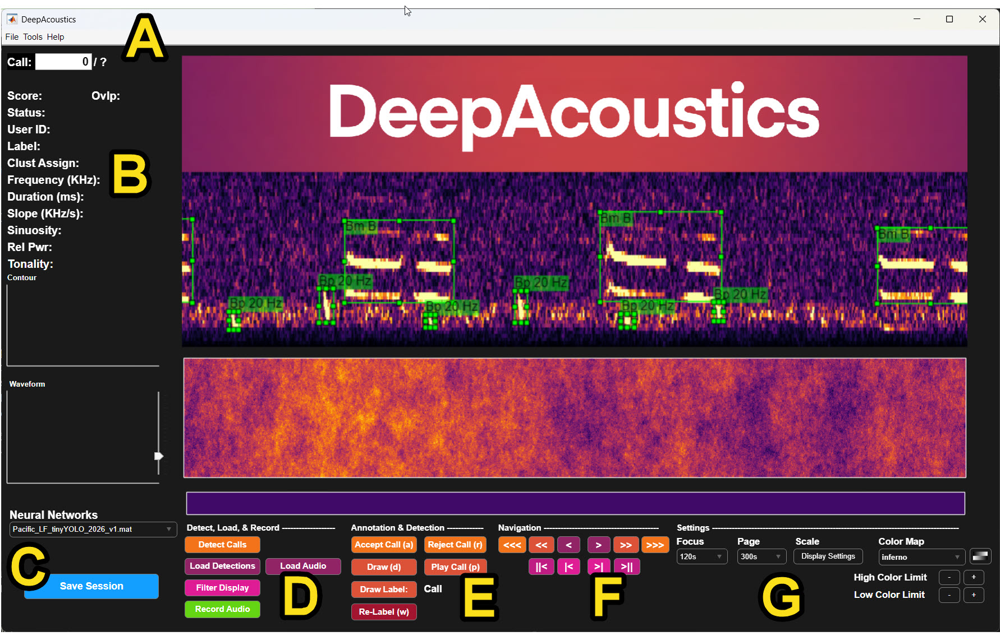

GUI Overview
This page walks through the main DeepAcoustics window which is the panel layout you’ll see every time you open the app, including specifics of the File menu options. The general descriptions provided in this and the subsequent informative tabs is reinforced through the step-by-step tutorial exercieses.
Main window layout

- A: Title bar / menu bar. The File, Tools, and Help menus. File is covered in detail below; Tools and Help are not yet documented here.
- B: Call detail panel. Shows the metadata for whichever call is currently in view including the (Confidence) Score, Status, User ID, Label, Clust Assign, Frequency (KHz), Duration (ms), Slope (KHz/s), Sinuosity, Rel Pwr, and Tonality. Given the original intent of DeepSqueak was detection of ultra-high frequency rat vocalizations and Coffey et al. (2019) intended it as a tool for clustering call types, this per call information is accompanies by a Contour and Waveform displays beneath it. Additional descriptions of these features are available in the classification/clustering section.
- C: Neural Networks selector and Save Session. The dropdown chooses which trained network (
.matfile) is available in the folder for detection; the blue Save Session button writes your current session (loaded audio, detections, annotations, and settings) to disk. - D: Detect, Load, & Record. Run the active network on the loaded audio (Detect Calls), load existing detections or audio, filter the display, or record new audio.
- E: Annotation & Detection. The accept/reject and manual-annotation controls used while reviewing calls. A user can either Accept Call, Reject Call, Draw, Play Call, Draw Label, and Re-Label, each with its keyboard shortcut shown in parentheses.
- F: Navigation. Step through calls and pages of the spectrogram display, from single-call steps up to jumping to the first/last call.
- G: Settings. Focus and Page duration, Display Settings, Color Map, and the High/Low Color Limit controls that adjust how the spectrogram is rendered.